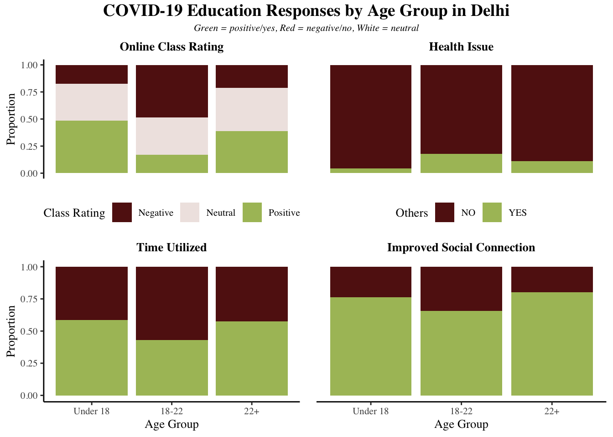
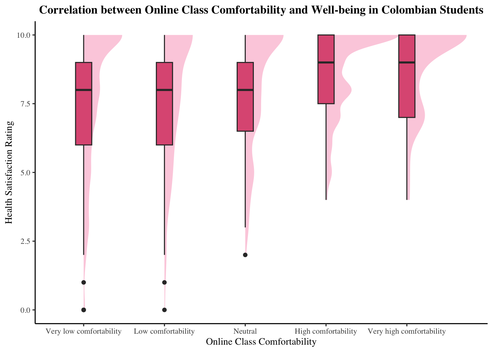

Building Edtech for Mental Wellbeing
By Na & Avianna
Throughout and in the aftermath of the COVID-19 pandemic, there has been a notable shift towards incorporating technology into education. While educational technology has increased accessibility and flexibility in uncertain times, there are potential consequences due to the inherent lack of social connection and physical activities in online learning. In this project, we aim to investigate this increasing prevalence of educational technology and their impact on the well-being of individuals within this evolving educational landscape.
Research Questions
To examine the impact of educational technological tools on students’ well-being, we explore three questions:
- Is there any age group that is more negatively affected by COVID-19?
- How do digital learning tools affect university students mental well being?
- Is there universality in terms of these elements?
Question 1: Which age group is most heavily impacted?
To investigate which age group is most heavily affected by the transition to online learning, we compare the reported comfortability with online class, state of wellness, efficiency with time utilization, and perceived social connection across different age groups.
It is apparent that Delhi college-aged students (aged 18 to 22) report the greatest negative impact with their online learning experience. They reported a negative experience during COVID-19 learning at over double the proportion of the other two age groups, and are also much less likely to have a positive experience with online class. These students also reported more health issues, less efficient time utilization, and worse social connection.
When it comes to Colombian students, college-aged students remain more negatively impacted by the transition to online learning compared to students of different age groups. In particular, they have a lower median score regarding their comfortability with online class. While the median score for all age groups across the other 3 categories are comparable, college students are more likely to report a lower score for their health satisfaction and social connection, as well as higher stress with time management.

Similarly, the 18-24 year-old age group in the Jordan University dataset ranks the highest in terms of proportion for 4 out of 4 categories. More specifically, around 80-90% of the 18-24 year-old Jordan University students reported with mental health issues and lowered connection with others during COVID-19 while being nervous and uncomfortable with taking quizzes and exams online from home. Furthermore, more than half of the 18-24 year-old population claimed that they did not have fixed bedtime and wake-up hours during COVID-19, as opposed to only 40% of their 25-30 year-old counterparts and 30% of those who are 30+ years old.

Question 2: How do digital learning tools affect university students mental well being?
There are 3 key themes relating to mental health and digital learning tools that arise from our datasets: Average time spent on online learning platforms, Level of social connection, and Level of comfortability with online classes. We find this overlap from 3 different universities in 3 different countries worthy of further investigation, even though each theme might not be presented in all 3 datasets. In visualizing the correlation between university student mental health status and these pressure points, we found insights that can inform the current status of digital learning tools.
1. Time Spent on Online Class (no data from Colombia)
Contrary to our hypothesis, there is a negative relationship between the number of hours Delhi college students spent online and reported health issue. Among college students that did report health problems, most spent under 4 hours for online learning.

In responding to how digital learning tools affect their mental wellbeing, Jordan college students overwhelmingly reported with exhaustion the more they spend using digital education platforms on a daily basis. This correlation between exhaustion and average daily digital use only amplifies after COVID-19. In details, before COVID-19, around 42% of all Jordan University students, who spent 1-3 hours daily on digital learning platforms, agreed that they are exhausted due to the use of digital learning tools. After COVID-19, Jordan students spend more time using digital learning tools daily, with 30% of them having a 3-6 average daily use and 26% of them having a 6-9 average daily use, all of whom agreed that they endure exhaustion because of digital learning tools. It is special to note that there were no students who spend more than 12 hours daily on digital learning tools that reported no exhaustion after COVID-19.

3. Online Class Comfortability

In the same vein, 77.1% of Jordan university students experience both discomfort with online class, more specifically online exams and assignments, as well as increased mental health issues during COVID-19. The second most-populated combinations of experiences are students with negative mental health and online class comfortability. The lowest ranking out of all categories are those with no mental health issues and issues with online class at all. This suggests that there is a positive relationship between online class comfortability and mental health.


2. Social Connection
Within the Jordan dataset, 98% of the students report with both mental health issues and increased isolation caused by online class. When investigating the marginal distributions, most Jordan students have mental health issues during COVID-19 as well as most Jordan students report increased isolation due to online class during COVID-19. Additionally, among the combinations of experiences (mental health issues with and without increased isolation, and isolation without mental health issues), the fewest students fall into the category of experiencing mental health issues without increased isolation.